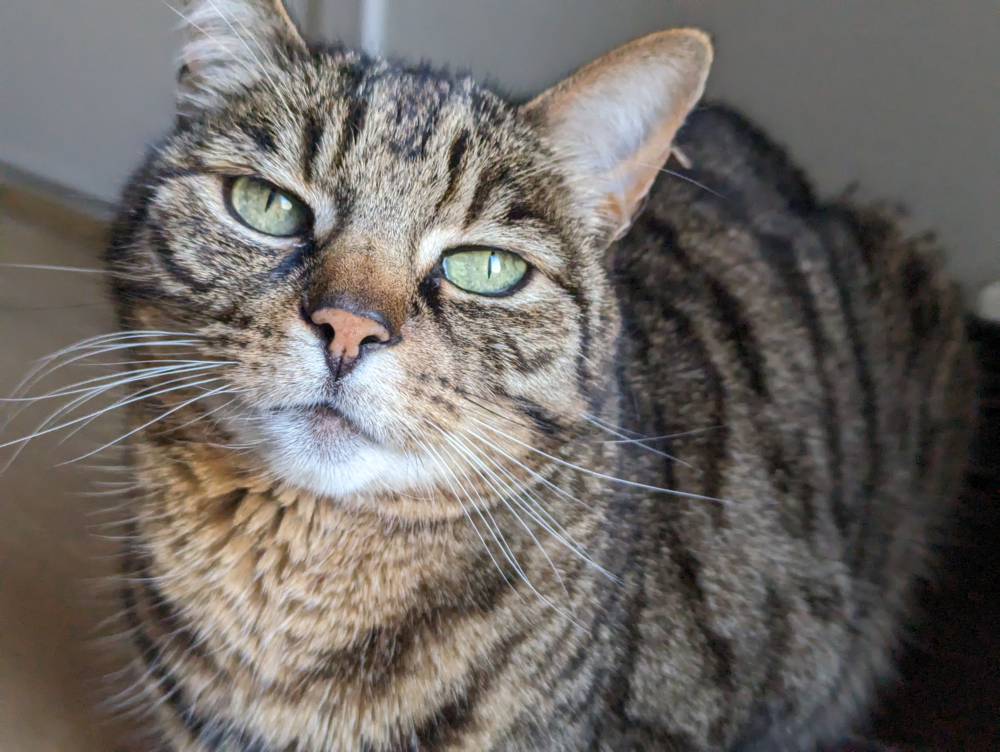

ATM10 Minecraft server
Om du er her for Minecraft serveren min er IPen mc.bork.no.
Den bruker mods, du kan finne modpacken her:All The Mods 10
Anbefaler å skru av JourneyMap inni spillet (trykk J) og erstatte med f.eks. Xaero's Minimap for ~50% performance boost. Spør borkboiiii hvis du trenger hjelp.
Server PC
CPU: i7 6700k
RAM: 9GB
Hei! Denne siden er et slags HTML eksperiment og ser litt shit ut atm. Blir å forandre det en gang... kanskje
Mitt navn er Birk og jeg er en 22-år-gammel mann fra Tromsø. Er veldig selv-kritisk så sliter litt med å beskrive meg selv på en positiv måte, men kort er jeg en rolig og sjenert introvert som er veldig glad i datamaskiner. Er en INFJ-T om du tror på sånt.
Annet enn data er jeg veldig interessert i psykologi, matlaging og kunst! I fritida pleier jeg som regel å spille med venner, men en sjelden gang går jeg tur eller tegner.
Fun fact: Jeg kan de første 150 desimalene i pi
Mare (hjalp med HTML koden):

Her er CVen min!